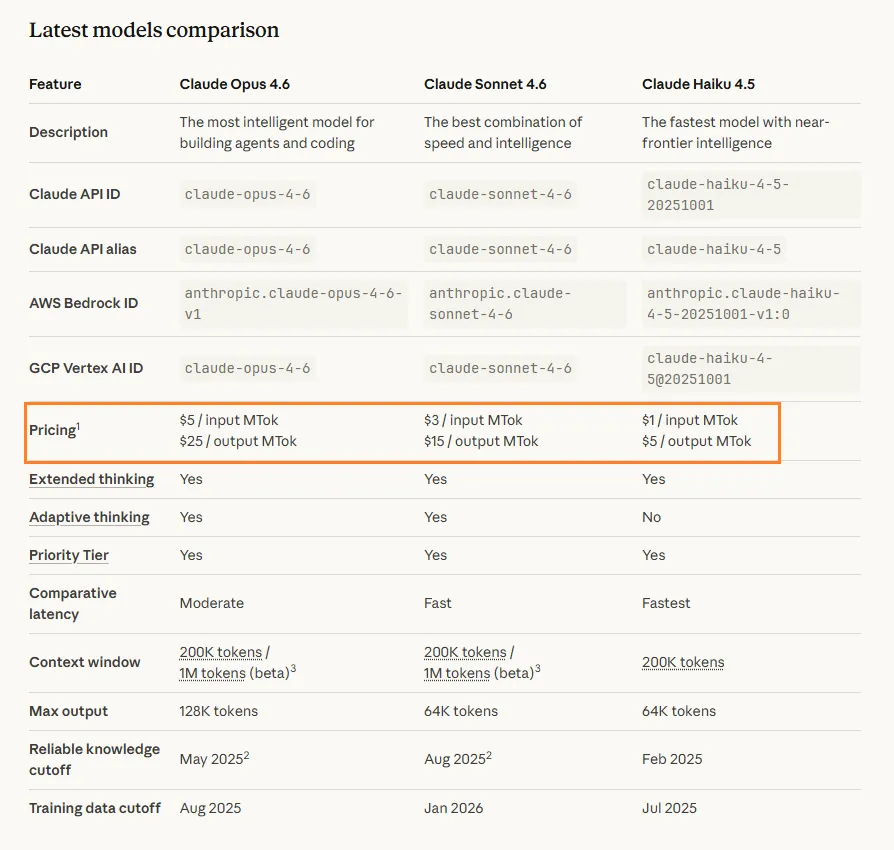
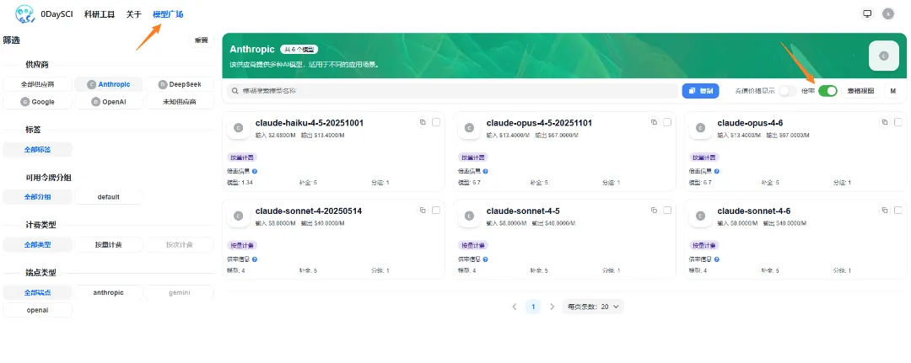
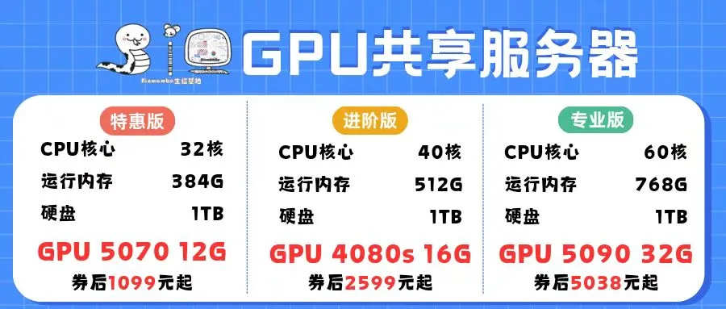

Token：AI时代不得不知道的大模型价格体系换算
原文：https://mp.weixin.qq.com/s?__biz=MzAwMzIzOTk5OQ==&mid=2247537263&idx=1&sn=5a2b0384514259dcec2f2626a5dcb0ee&chksm=9b3c2b3fac4ba22987da18525ee6d70e39bfb8b1fb74fe00b4db00f67ea91717334e849bd92f#rd 合集：AI时代，不用就会被淘汰
需要可接入小龙虾和其它AI的服务器？可参考：访问链接：https://biomamba.xiyoucloud.net/
RTX5090、4080S、5070显卡上机 AI时代，人人都得把大模型用起来，了解大模型价格体系，选对模型，不花冤枉钱！
Claude、Gemini、Codex对比
使用国外大模型，推荐先使用Codex，看看是否满足自己需求，因为这个实测性能也够用了，比其它两个便宜很多。
贵不一定是最好的，适合自己的才是最好的，我们也可以将ClaudeCode等工具替换为国产大模型，使用便宜的模型完成自己的任务：给ClaudeCode配置“中国芯”。
| ClaudeCode| GeminiCLI| Codex ---|---|---|--- 公司| Anthropic| Google DeepMind| OpenAI 价格| 贵| 中等| 便宜 教程| 西柚云教程：ClaudeCode基础使用教程| 西柚云教程：GeminiCLI基础使用教程| 西柚云教程：Codex基础使用教程 可用模型与定价| platform.claude.com| ai.google.dev| developers.openai.com
国内外AI IDE一览
现在大部分AI IDE都是基于VSCode这款开源IDE开发的，所以长的很像，功能也大差不差，无非是各个厂家针对自家模型进行了封装和优化。
| VSCode| Positron| Trae| Qoder| Cursor ---|---|---|---|---|--- 公司| 微软| Posit（Rstudio母公司）| 字节跳动| 阿里巴巴| Cursor 一句话特点| 最主流的通用 IDE| AI + 数据科学 IDE （RStudio 的 AI 版）| 有海外版本和国内版本，国内版本有免费模型| 使用自家模型的IDE| 很强大的AI IDE，据传 同一个模型，在Cursor上就是比其它IDE好用

大模型计费的逻辑是什么？
大模型一般都是基于Token计费的，核心思想是按量付费。
什么是Token
- Token 是大模型（LLM）处理文本时的最小单位 。模型并不是直接理解“字”或“单词”或“一段话”，而是把文本先分词拆分成一段一段的 token ，向量化后输入模型进行处理。
模型官方价格
-
大多数模型官方都是 输入 / 输出分开计费 ：
官方Cost = 输入价格 * 输入Token + 输出价格 * 输出Token。 -
一般而言，输入 Token 和 输出 Token 单价不同，输出Token比输入Token贵得多，如下图Claude模型的价格对比，性能越强，模型价格越贵，而输出价格都是输入价格的5倍数。

中转站价格
国内中转站大都利用OneApi以及基于OneApi改进的NewApi来二开的，在这种平台里面，默认 1$ = 50w tokens，即0.002$/1k tokens，把这个叫做基准价格。
1️⃣ 基准价格换算
| Token\单位 | Token | 美金 | 人民币 |
|---|---|---|---|
| 一千 | 1000 | 0.002 | 0.014 |
| 五十万 | 500000 | 1 | 7 |
| 百万 | 1000000 | 2 | 14 |
| 千万 | 10000000 | 20 | 140 |
2️⃣ 中转计费逻辑
-
中转站怎么计费？其通过倍率度量模型的价格，公式如下（分组倍率先忽略，如果有分组倍率，则整体乘以分组倍率）：
-
提示token数即官方的输入token，补全token数即官方的输出token
-
模型倍率=输入价格/基准价格，补全倍率=输出价格/输入价格
-
中转Cost = 模型倍率 * ( 提示token + 补全token * 补全倍率)-
=
模型倍率 * 提示token数 + 模型倍率 * 补全倍率 * 补全token数 -
=
(输入价格/基准价格) * 输入token数 + (输入价格/基准价格) * (输出价格/输入价格) * 补全token数 -
=
(输入价格/基准价格) * 输入token数 + (输出价格/基准价格) * 输出token数 -
=
(输入价格 * 输入token数 + 输出价格 * 输出token数) / 基准价格 -
=
官方Cost / 基准价格
-
-
可以看到，官方价格和中转站价格，它们只差了一个固定参数，即基准价格，而基准价格是固定的，所以二者是可以一对一转换过来的（忽略缓存价格）。
-
模型倍率用来做什么？用来做渠道加价、不同供应商统一计费、平台利润。为什么只有补全倍率，没有提示倍率？实际上是将提示倍率设置为1了，简化了计算。
3️⃣ 西柚价格计费逻辑
-
西柚云的1000W Token是20元，相当于是官方价格打了1.5折。（相当于MTok基准价格为2$*0.15=0.3$）
-
分组倍率设置为1，补全倍率与官方补全倍率一致，西柚模型倍率=(官方模型倍率/0.15)*模型折扣。
-
为什么要除以0.15？这相当于求得整体的官方倍率后，再乘以模型折扣得到最后的倍率。目前模型的折扣为：Claude，4折；Gemini，2折；Codex，1.5折。
-
当前价格：
-
1千万Token：20元*9折 = 18元
-
1亿Token：200元*85折=170元
-
3亿Token：600元*8折=420元
-
-
模型倍率信息：https://www.0daysci.com/pricing

4️⃣ 具体模型价格明细
- 拿三家模型热门模型举例，其换算关系为：
模型（模型ID）| 输入价格 （MTok）| 输出价格 （MTok）| 官方补全倍率| 官方模型倍率| 西柚模型倍率 ---|---|---|---|---|--- Claude Opus 4.6 (claude-opus-4-5-20251101, claude-opus-4-6, xiyou-bio-ai-cc-opus)| $5| $25| 25/5=5| 5/2=2.5| 先计算原价再计算折扣：(2.5/0.15)*0.4=6.7 等效于按照换算后的模型倍率计算折扣：(5/0.3)*0.4=6.7 Claude Sonnet 4.6 (claude-sonnet-4-20250514, claude-sonnet-4-6, claude-sonnet-4-5, xiyou-bio-ai-cc-sonnet)| $3| $15| 15/3=5| 3/2=1.5| (1.5/0.15)*0.4=4 Claude Haiku 4.5 (claude-haiku-4-5-20251001, xiyou-bio-ai-cc-haiku)| $1| $5| 5/1=5| 1/2=0.5| (0.5/0.15)*0.4=1.34
gemini-3.1-pro-preview| $4| $18| 18/4=4.5| 4/2=2| (2/0.15)*0.2=2.67 gemini-3-pro-preview| $4| $18| 18/4=4.5| 4/2=2| (2/0.15)*0.2=2.67 gemini-3-flash-preview| $0.5| $3| 3/0.5=6| 0.5/2=0.25| (0.25/0.15)*0.2=0.34
gpt-5.4| $5| $22.5| 22.5/5=4.5| 5/2=2.5| (2.5/0.15)*0.15=2.5 gpt-5.3-codex| $1.75| $14| 14/1.75=8| 1.75/2=0.875| (0.875/0.15)*0.15=0.875 gpt-5.2| $1.75| $14| 14/1.75=8| 1.75/2=0.875| (0.875/0.15)*0.15=0.875 gpt-5.2-codex| $1.75| $14| 14/1.75=8| 1.75/2=0.875| (0.875/0.15)*0.15=0.875 gpt-5.1-codex-max| $1.25| $10| 10/1.25=8| 1.25/2=0.625| (0.625/0.15)*0.15=0.625 gpt-5.1-codex| $1.25| $10| 10/1.25=8| 1.25/2=0.625| (0.625/0.15)*0.15=0.625 gpt-5.1| $1.25| $10| 10/1.25=8| 1.25/2=0.625| (0.625/0.15)*0.15=0.625
- 参考：https://github.com/songquanpeng/one-api/issues/766
常见问题
Token如何计费
-
西柚云平台的Token都是按量计费，充值后永不过期。
是否有包月服务
- 西柚云推出AI编程模型服务，主要的目的是用于科普AI编程大模型以及后续AI课程的轻度使用。暂时没有包月服务或者code plan服务，实际上市面上的包月服务，都是在额定的Token包上加了个折扣，因为Token这个东西，实际上是实打实的消耗品，可以和电力等成本挂钩的，再便宜也会有个限度。
Token用得很快，怎么办
-
任务越复杂，处理的上下文越多，Token消耗越快。
-
此外，现在的大模型是没有记忆的，每次对话都会把之前上下文信息带上，有可能90%上下文是以前的信息，只有5%是本次对话的信息，比较独立的任务是建议新建一个全新的对话。
模型使用过程中断网了怎么办
-
建议按照我们的教程使用screen、tmux后台运行，这样即使断网SSH连接中断了，也不影响现在的会话。
-
如果会话已经中断了，重新进入AI终端后，输入/resume命令尝试恢复。
西柚云在售算力
我们长期提供GPU、CPU算力，欢迎大家联系客服微信[Biomamba_zhushou]优惠下单。 


如何联系我们

 留一个领取资料、开箱即用的单细胞分析镜像的微信号[Biomamba_zhushou]，方便各位随时交流。同时我们也构建了交流群矩阵，欢迎大家入群讨论。
大家可以阅读完这几篇之后添加给生信入门初学者的小贴士没有检索，就没有发言权
留一个领取资料、开箱即用的单细胞分析镜像的微信号[Biomamba_zhushou]，方便各位随时交流。同时我们也构建了交流群矩阵，欢迎大家入群讨论。
大家可以阅读完这几篇之后添加给生信入门初学者的小贴士没有检索，就没有发言权
已有生信基地联系方式的同学无需重复添加

 您点的每个赞和在看，我都认真当成了喜欢
您点的每个赞和在看，我都认真当成了喜欢